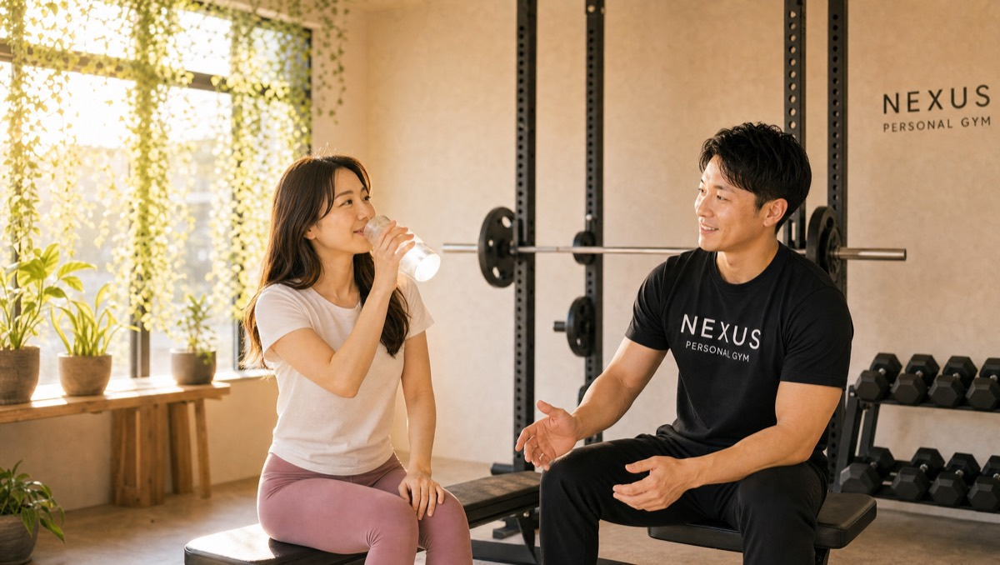

NEXUS Personal Gym ／ 神奈川県川崎市幸区
NEXUSパーソナルジム 鹿島田/新川崎店｜川崎市に初上陸した完全個室ジム

川崎市幸区下平間、JR南武線・鹿島田駅とJR横須賀線・新川崎駅の2駅が使える完全個室パーソナルジムです。NEXUSにとって、鹿島田/新川崎店は川崎市への初出店。これまで都内や横浜を中心に全国約70店舗を展開してきたNEXUSが、いよいよ川崎エリアに上陸しました。鹿島田/新川崎店が大切にしているのは、「きつすぎず、楽すぎず」の絶妙な強度調整と、食事からトレーニングまでを見据えた徹底したカウンセリング。オープン直後ですが、「翌日ちゃんと筋肉痛が来る絶妙な強度で4ヶ月継続している」「自己流ダイエットの不安がカウンセリングで解消し、体脂肪率も落ちてきた」という声のように、早くもGoogle口コミ★5.0の評価をいただいています。武蔵小杉の大型ジムの混雑を避け、地元でじっくり通いたい方にもおすすめです。完全個室で担当トレーナーと二人だけだから、人目を気にせず集中できます。ウェア・タオル・ドリンク・プロテインまで全部込みのアメニティ完備で、手ぶら通いOK。毎日8:00〜23:00・LINE予約で、無理なく続けられます。
- 完全個室
- 川崎市初出店
- 鹿島田駅×新川崎駅の2駅
- 絶妙な強度調整
- 徹底カウンセリング
- Google口コミ★5.0
この店舗の特徴
NEXUS鹿島田/新川崎店は、川崎市幸区下平間にある完全個室パーソナルジム。JR南武線・鹿島田駅と、JR横須賀線・新川崎駅の2駅が使える便利な立地です。この店舗の最大の特徴は、NEXUSにとって「川崎市への初出店」であること。これまで都内・横浜エリアを中心に全国約70店舗を展開してきたNEXUSが、川崎の地に初めて根を下ろした一軒です。「川崎で完全個室のパーソナルジムを探していた」「都内まで出ずに、地元で本格的な指導を受けたい」——そんな方にこそ通っていただきたい店舗です。鹿島田/新川崎店が指導で大切にしているのは、一人ひとりの様子を見ながら調整する「絶妙な強度」。きつすぎて続かない、楽すぎて効かない、そのどちらでもない“翌日ちゃんと筋肉痛が来る”ラインを見極めてメニューを組み立てます。さらに、トレーニングだけでなく食事の悩みまで丁寧にヒアリングする徹底したカウンセリングで、自己流ダイエットの不安を解きほぐします。川崎市初の店舗ながら、指導の質はブランド全体で共有されており、オープン直後から早くもGoogle口コミ★5.0の評価をいただいています。完全個室のマンツーマンだから、人目を気にせず自分のペースで進められます。予約はLINEでサッと完結。地元・川崎で、続けられる身体づくりを始めてみませんか。
きつすぎず、楽すぎず。絶妙な強度

パーソナルトレーニングが続くかどうかは、「強度」の設計にかかっていると言っても過言ではありません。追い込みすぎれば身体も心も疲弊して足が遠のき、反対に楽すぎれば効果を感じられずモチベーションが下がってしまう。鹿島田/新川崎店が大切にしているのは、その両極のどちらでもない“絶妙なライン”を見極めることです。担当トレーナーは、その日のあなたの表情や動き、呼吸の様子を見ながら、重量やセット数を細やかに調整します。目安にしているのは、「終わった直後はやり切った達成感があり、翌日にはちゃんと心地よい筋肉痛が来る」という状態。これは、身体に適切な刺激が入りつつ、無理な負担にはなっていないひとつのサインです。実際、鹿島田/新川崎店の会員からは「きつすぎず楽すぎず、翌日きちんと筋肉痛が来る絶妙な強度だから、4ヶ月続けられている」という声をいただいています。運動が苦手な方や、これまで三日坊主で終わってしまった方こそ、この“ちょうどいい強度”の心地よさを体感していただきたいと考えています。完全個室のマンツーマンだからこそ、あなた専用に強度をチューニングできる——それが、続けられる身体づくりの土台になります。
自己流の不安を、カウンセリングで解消

「ネットの情報を頼りに自己流でダイエットしてきたけれど、本当にこのやり方で合っているのか不安」——そんな悩みを抱えて鹿島田/新川崎店にいらっしゃる方は少なくありません。食事を極端に減らして体調を崩した、頑張っているのに体重が落ちない、リバウンドを繰り返している……。自己流の難しさは、「何が正解か分からないまま走り続けてしまう」ところにあります。鹿島田/新川崎店では、トレーニングを始める前に、あなたの生活リズムや食事の傾向、これまでのダイエット経験、目標を丁寧に伺うカウンセリングを大切にしています。トレーニングメニューだけでなく、日々の食事の悩みまで含めて一緒に整理することで、「何をどう変えればいいのか」がクリアになります。実際、会員からは「自己流ダイエットの不安が、徹底したカウンセリングで解消した。体重も体脂肪率も効率的に落ちてきている」という声をいただいています。むやみに食事を我慢させたり、極端な制限を課したりするのではなく、無理なく続けられる範囲で、あなたに合ったやり方を一緒に見つけていく。オプションのAI食事指導（月額3,000円・税込）も活用すれば、写真を送るだけで日々の食事をサポートできます。一人で悩んできた不安を、まずはカウンセリングで手放してみませんか。
手ぶらで、2駅どちらからでも

ジム通いが続かない理由のひとつに、「準備が面倒」という声がよくあります。運動着やタオルを揃えてバッグに詰め、忘れ物がないか確認して……この“ひと手間”が、忙しい毎日のなかでは意外と大きなハードルになります。鹿島田/新川崎店は、その手間をまるごとなくしました。ウェア・水・タオル・プロテインまですべて無料でご用意しているので、通勤バッグや買い物帰りのそのままの姿で、手ぶらで立ち寄れます。会員からも「ウェアも水もタオルも無料で手ぶらでOK。予定の前後に気軽に組み込める」という声をいただいています。さらに立地の面でも通いやすさは抜群です。鹿島田/新川崎店は、JR南武線・鹿島田駅と、JR横須賀線・新川崎駅の2駅が使える場所にあります。武蔵小杉方面・川崎方面へ通勤される方は南武線の鹿島田駅から、横浜・品川方面へ向かう方は横須賀線の新川崎駅から——その日の予定や行き先に合わせて、通いやすいほうの駅を選べます。毎日8:00〜23:00の営業なので、出勤前の朝にも、仕事帰りの夜にも、生活の動線に自然に組み込めます。「手ぶらで、2駅どちらからでも」——この身軽さが、通い続ける習慣を後押しします。
武蔵小杉まで出なくていい
川崎エリアでパーソナルジムやスポーツクラブを探すと、まず候補に挙がるのが武蔵小杉の大型施設ではないでしょうか。設備は充実していますが、その一方で「いつも混雑していて器具の順番待ちがストレス」「人の目が気になって、思うように集中できない」と感じる方も少なくありません。鹿島田/新川崎店は、そんな方に“地元でじっくり通える一軒”をご提案します。JR南武線・鹿島田駅とJR横須賀線・新川崎駅の2駅が使えるので、わざわざ武蔵小杉まで出なくても、生活圏のなかで本格的な指導を受けられます。しかも鹿島田/新川崎店は完全個室のマンツーマン。あなたと担当トレーナーの二人だけの空間だから、器具の順番待ちも人目もなく、自分のトレーニングだけに集中できます。毎日8:00〜23:00の営業で、予約はLINEから完結、6時間前まで無料でキャンセル・変更が可能です。武蔵小杉の大型ジムの混雑に疲れた方も、これから川崎で運動を始めたい方も、まずは近くの鹿島田/新川崎店で、自分だけの完全個室を体感してみてください。
NEXUSブランドの実績
鹿島田/新川崎店の指導の背景には、全国約70店舗・会員継続率96%というNEXUSブランドの実績があります。鹿島田/新川崎店はNEXUSにとって川崎市への初出店ですが、川崎市初の店舗だからといって指導の質が新しいわけではありません。全トレーナーが3ヶ月の厳しい自社教育プログラムを修了してからデビューし、鹿島田/新川崎店にも同じ教育を受けたトレーナーが在籍しています。系列店では、月島店が★5.0（172件）、横浜元町店が★5.0（87件）という、地域で長く支持される高い評価をいただいています（2026年7月時点）。鹿島田/新川崎店が川崎市への初出店にもかかわらず、オープン直後からGoogle口コミ★5.0をいただけているのは、こうしてブランド全体で積み上げてきた指導品質が各店で共有されているからです。川崎市に初上陸したNEXUSで、地元で続けられる身体づくりを始めたい方は、ぜひ一度お越しください。
まずは無料体験から
「川崎で完全個室のパーソナルジムを探していた」「自己流ダイエットに限界を感じている」「武蔵小杉の混雑を避けて、地元でじっくり通いたい」——そんな方こそ、まずは無料体験からお試しください。鹿島田/新川崎店の無料体験は、カウンセリングであなたの目標や生活リズム、食事の傾向、これまでの運動・ダイエット経験をじっくり伺うところから始まります。その上で、姿勢や身体のクセをチェックし、実際に“きつすぎず楽すぎない絶妙な強度”のトレーニングも体験していただきます。会員からは「翌日ちゃんと筋肉痛が来る絶妙な強度で4ヶ月続けられている」「徹底したカウンセリングで自己流の不安が解消した」という声をいただいています。体験も手ぶらでOK。ウェア・タオル・ドリンクもすべてご用意しているので、仕事や買い物の帰りに、そのままお立ち寄りいただけます。JR南武線・鹿島田駅、JR横須賀線・新川崎駅の2駅から通いやすく、無理な勧誘は一切ありません。まずは川崎に初上陸したNEXUS鹿島田/新川崎店で、続けられる身体づくりの第一歩を踏み出してください。
料金プラン
入会金は通常55,000円、無料体験当日入会で15,000円（税込）に割引。AI食事指導は月額3,000円（税込）。全店舗共通の料金です。
アクセス
- 店舗名
- NEXUSパーソナルジム 鹿島田/新川崎店
- 住所
- 〒212-0053
神奈川県川崎市幸区下平間35-5 グレース新川崎401号 - 最寄り駅
- JR南武線 鹿島田駅／JR横須賀線 新川崎駅
- 営業時間
- 毎日 8:00〜23:00
- 電話番号
- 050-1790-8499
Googleマップの口コミ
出典：Google マップ
NEXUS鹿島田/新川崎店は川崎市初のNEXUS店舗。絶妙な強度調整と徹底したカウンセリングで、既にGoogle口コミ★5.0の評価をいただいています。「翌日ちゃんと筋肉痛が来る絶妙な強度で4ヶ月継続」「自己流ダイエットの不安がカウンセリングで解消し、体脂肪率も低下」といった声のように、川崎に初上陸したNEXUSとして、これからも地元で口コミを重ねてまいります。
NEXUSは全国約70店舗・会員継続率96%。系列店では月島店が★5.0（172件）、横浜元町店が★5.0（87件）の評価をいただいており、ブランドとしての指導品質は各店で共有されています。
きつすぎず、楽すぎず。翌日にきちんと筋肉痛が来る絶妙な強度で組んでくれるので、無理なく続けられています。おかげで4ヶ月継続中。今まで三日坊主だった自分でも通えているのが驚きです。
自己流のダイエットにずっと不安があったのですが、食事からトレーニングまで徹底してカウンセリングしてもらえて、その不安が解消されました。体重も体脂肪率も効率的に落ちてきていて、続けてよかったです。
ウェアも水もタオルも全部無料で、手ぶらでOKなのが本当に助かります。仕事や予定の前後に気軽に組み込めるので、通うのが億劫になりません。2駅使えるので行き帰りの動線に合わせられるのも便利です。
鹿島田/新川崎店のよくある質問
Q鹿島田・新川崎にパーソナルジムはありますか？+
Q川崎市に他のNEXUS店舗はありますか？+
Q武蔵小杉・矢向からも通えますか？+
よくある質問（全店共通）
料金・制度などNEXUS全店に共通するご質問です。さらに詳しくは110問のFAQをご覧ください。
Q料金はいくらですか？+
Q手ぶらで通えますか？+
Qキャンセルはいつまでできますか？+
Q食事指導はありますか？+
Qトレーナーはどんな人ですか？+
Q女性会員は多いですか？+
Q体験の流れは？+
NEXUSパーソナルジムの特徴・料金をもっと見る